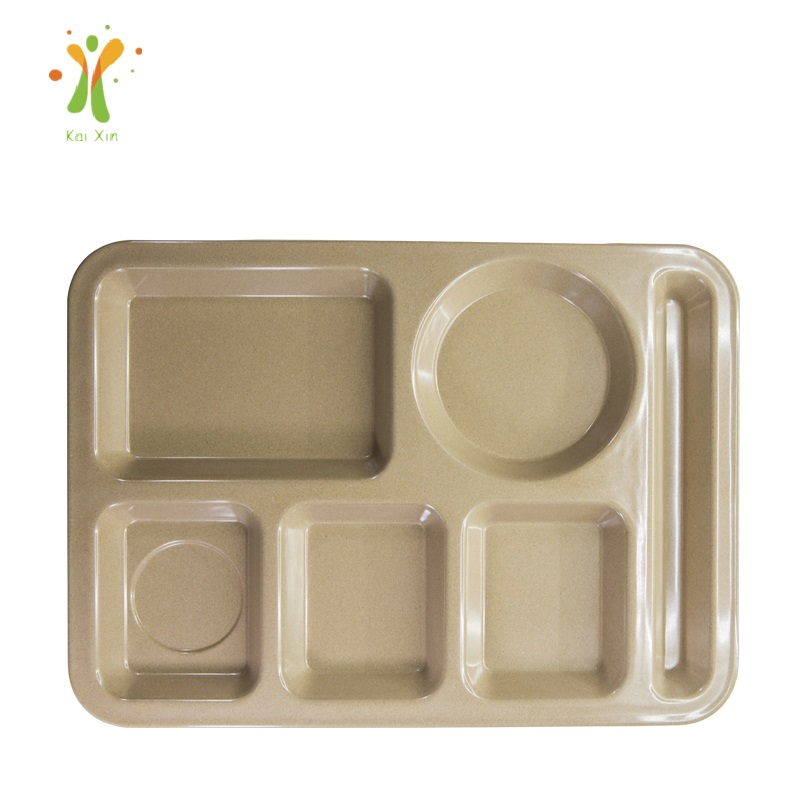

Aussie Summer Stock-Up: Why Importers Order Rice Husk Tableware in September for the December BBQ Season
In the northern hemisphere, December means snow, scarves and indoor dinners. In Australia and New Zealand, it means the opposite: long daylight hours, 30-degree afternoons and the most important outdoor entertaining season of the year. Christmas lunch moves to the patio, New Year's Eve becomes a backyard barbecue, and January is one continuous summer of cricket, camping and shared meals. For importers and wholesalers supplying that season, the calendar works backwards — the money is made in December, but the buying decision happens right now, in September. Here's how to plan a rice husk (plant fiber) tableware order so it lands on your shelves before the first prawns hit the barbecue.

A reusable rice husk serving tray — the kind of eco serveware that moves fast before the Australian summer season.
The Southern-Hemisphere Calendar Works Backwards
If you sell tableware in the US, Canada or Europe, your busy window is Thanksgiving-to-New-Year: indoor dinner parties, festive table settings and cold-weather comfort food. Australian and New Zealand buyers face the mirror image. December 25 is high summer, so entertaining moves outdoors — the barbecue becomes the kitchen, the serving tray becomes the hero, and the table has to survive sun, wind, kids and a crowd that's been swimming all afternoon. That seasonal flip changes what sells, but more importantly it changes when you have to order. A container from China to Sydney or Auckland doesn't move in a week: production, quality inspection, sailing and customs clearance add up quickly, and missing the window means paying for airfreight — or watching a competitor sell the season without you.
The Real Deadline Is September, Not December
Work backwards from the first week of December and a sensible calendar looks like this. Placing your order in September leaves room for production (roughly 20–45 days depending on quantity and whether you need custom molds or colors) plus a comfortable ocean transit of 15–30 days to Australian or New Zealand ports. That puts stock in your warehouse by mid-to-late November, with the first weeks of December free for distributing to retail shelves, café partners or your own web store — not for praying that a delayed sailing arrives in time.
Ordering in October is already a squeeze for anything custom, and by November you're choosing between airfreight costs that can eat your margin or accepting that your eco tableware line simply won't be part of the December season. Buyers who have been through a missed season tend to treat September the way northern importers treat midsummer: it's the quiet month where the smart orders get placed. If your supplier quotes you a clear lead-time breakdown up front — production, inspection, loading and shipping separately — you can plan with confidence. That transparency is one of the checks we recommend in our guide on choosing a reliable eco tableware manufacturer.
What Actually Sells During an Australian Summer
Once you know the season, the shopping list writes itself. Based on what distributors reorder year after year, these rice husk (plant fiber) products are the core of a summer BBQ assortment:
🥩 Serving trays — the centerpiece of barbecue culture. A large, durable rice husk serving tray carries meat straight from the grill to the table and looks good doing it. Retailers love them as giftable summer SKUs.
🔪 Chopping boards — prep happens outside in summer. Knife-scratch-resistant, easy-to-clean rice husk chopping boards are year-round sellers that peak hard before Christmas. The colored versions with juice grooves are popular for outdoor kitchens.
🥗 Compartment & round plates — summer eating is grazing: salads, grilled veg, antipasto, fruit. Compartment plates and round plates handle messy, colorful food without staining, and they stack neatly for storage between events.
🥣 Bowls & kids' sets — coleslaw, potato salad, ice cream, and the kids' table. Sturdy rice husk bowls survive drops on concrete, and kids' tableware sets are a dependable Christmas-gift category for parents who want plastic-free lunch and dinnerware.
Why Rice Husk (Plant Fiber) Tableware Fits Outdoor Summer Service
Australian and New Zealand consumers are among the most eco-conscious in the world, and "plastic-free" and "BPA-free" are now mainstream buying criteria, not niche preferences. Rice husk tableware speaks directly to that: it's made from a natural byproduct of rice milling — the hull — that would otherwise be burned or discarded. The husk is ground and molded under heat and pressure with a food-grade starch binder into a dense, durable material. No plastic, no BPA, and it's reusable, which makes it genuinely different from the single-use "compostable" plates that still generate bin bags of waste after one barbecue.
For outdoor service specifically, the practical advantages matter as much as the story. Plant fiber tableware is lightweight — easy for staff and guests to carry — yet tough enough for hot food, direct sun and the occasional drop. It's kind to knives, doesn't absorb oil or curry stains the way some materials do, and cleans up fast between courses. And because it's made for reuse, the per-event cost drops every time it goes back on the table. That combination — sustainability story plus real durability — is why eco tableware keeps appearing in summer merchandising from Sydney to Perth and across the ditch in Auckland and Wellington.

A complete summer set doesn't need five suppliers — trays, plates, bowls and boards can share one order.
One Order, One Container: Plan the Whole Range Early
Here's the efficiency secret most first-time importers miss: because all of these products share the same rice husk material and a similar production process, you can mix an entire summer range into a single order and a single container. Instead of running five small orders with five different suppliers — five sets of paperwork, five minimums, five shipping fees — you consolidate trays, boards, plates, bowls and kids' sets into one production run and one 40HQ. Mixing SKUs also lets you test the season properly: stock the proven hero products deep, and use the remaining container space to trial one or two new lines without committing to full-container minimums.
Your supplier should be able to tell you exactly how many units fit per carton and roughly how many cartons load into a 20ft or 40ft container for each product. If the answer is vague, treat it as a red flag — precise loading data is standard for any factory that ships tableware regularly. Before you commit to quantities, our article on 5 questions to ask before importing eco tableware walks through the inquiry details that separate a real manufacturer from a middleman.
Import Basics for AU & NZ Buyers (Ask These Two Questions)
Because rice husk starts life as an agricultural material, first-time buyers sometimes worry about border rules. The short version: the finished product you import is a heat-molded, dense composite — not raw plant material — and reputable suppliers ship it as a finished manufactured good with standard commercial documentation. That said, requirements can vary by shipment and over time, so two questions are worth asking any supplier before you commit:
1. What food-contact documentation do you provide? For tableware sold to restaurants, cafés and retailers, buyers increasingly want to see migration test reports that document food-contact safety. Our products are tested against food-contact standards, and we share SGS test reports with every quotation — always ask a new supplier what documentation they can actually produce.
2. What shipping and import paperwork do you supply? A clear answer covers packing lists, commercial invoices and any documents your customs broker needs. If your supplier exports to Australia or New Zealand regularly, they'll know the routine — export experience is a genuine advantage worth asking about.
Summer Branding: The Season That Sells Itself
One more reason September ordering wins: it gives you time to brand the season. Reusable rice husk tableware is an ideal vehicle for private label — logo molded or printed onto serving trays, custom Pantone-matched colors for a retailer's exclusive line, or gift-boxed sets positioned for Christmas. Australian summer is also a strong promotional window: hospitality brands and outdoor-lifestyle retailers love a coordinated look across trays, plates and boards for their summer catalogues. Because production slots fill up as December approaches, brands that lock their artwork in September get the custom colors and logos they want, while last-minute buyers are stuck with whatever plain stock remains. For more on how customization works end to end, our company and factory overview covers our OEM/ODM setup.
Quick Checklist: Planning Your December BBQ Season Order
✅ Place the order in September — production plus sea freight needs 8–12 weeks to Australia & New Zealand
✅ Build the range early: serving trays, chopping boards, plates, bowls, kids' sets in one mixed container
✅ Confirm per-carton and per-container loading figures before you commit quantities
✅ Ask for food-contact test reports up front (ours are SGS tested)
✅ Lock private-label artwork and Pantone colors now, not in November
✅ Keep a small stock reorder reserved for January — the season runs long after Christmas
Frequently Asked Questions
Is September really too early to think about December?
Not for imported goods. A typical order cycle from a Chinese factory to Australia or New Zealand — production, quality checks, sailing and clearance — realistically spans 8 to 12 weeks for standard stock, and longer for custom colors or molded logos. September ordering lands stock in late November, which is exactly where you want to be. Late orders are the reason airfreight exists, and airfreight is the reason margins disappear.
What's the difference between rice husk tableware and single-use compostable plates?
They sit in different categories. Single-use compostable plates are designed to be discarded after one meal. Rice husk tableware is reusable dinnerware: it's molded to be dense and durable, washed and returned to service hundreds of times. So it solves both problems at once — a sustainable material and no daily waste stream — which is why hospitality and retail buyers treat it as a long-term product line, not a seasonal disposable.
Can I mix different products in one container to test the market?
Yes — and we'd encourage it. A mixed 20ft or 40HQ container lets you stock proven best-sellers deep while trialing new SKUs with a small allocation, all in one production run and one shipment. Send us your target products and rough quantities, and we'll reply with a loading plan and a clear breakdown of stock items versus custom production minimums.
Planning your December summer season now?
Tell us your target market, product mix and container size. We'll come back with lead times, a loading plan, our SGS food-contact reports and a sample proposal — custom logo and color options included from our 5,000 m² facility.
Send InquiryPublished by Kaixin Eco Team · Shenyang Kaixin Technology Co., Ltd. — eco-friendly rice husk (plant fiber) dinnerware manufacturer since 2016, shipping to 40+ countries with full OEM/ODM support. Start with the Kaixin eco tableware homepage, browse the full product range for your summer assortment, or read why food businesses are switching to rice husk tableware.